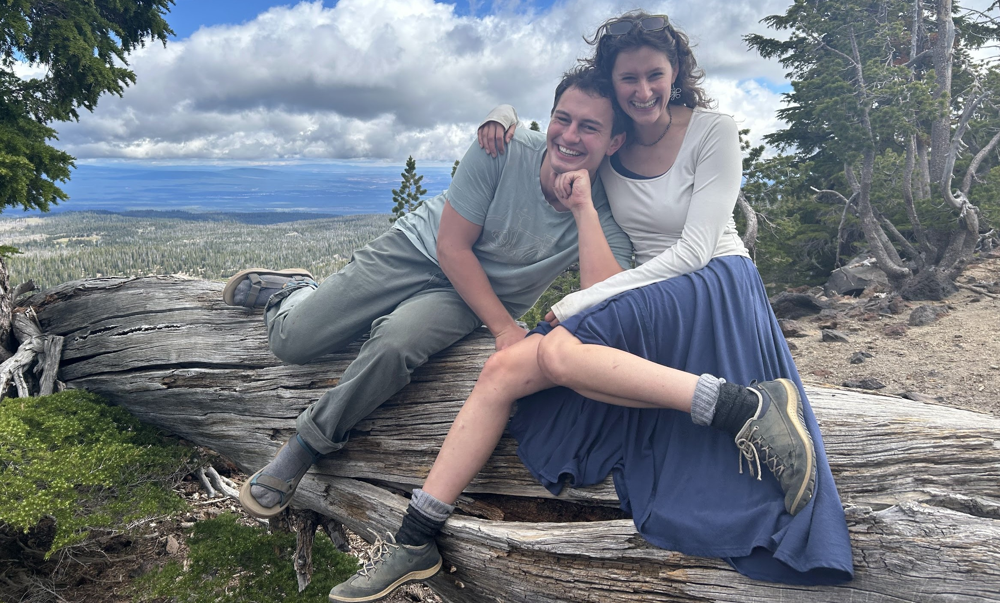

Personal
Time away from the desk

Off hours
While my job is very cool, I also enjoy being outside. My outdoor adventures have taken many forms over the years, including running, backpacking, bikepacking, mountaineering, and, most recently, rock climbing. Being in beautiful spaces with people I care about helps remind me what matters: family, friends, security, joy, bikes, and cultivating dad-lore. And while the nuclear world-order is undeniably a serious matter, the collapse of civilization will probably not be ushered in by a data scientist II writing Python code. So let's take seriously what is serious, and enjoy the rest.
Currently
Reading: All the Lovers in the Night by Mieko Kawakami; Dungeon Crawler Carl by Matt Dinniman.
Listening: Nothing More, Anais Mitchell, Of Mice & Men, Eidola, Men I Trust.
Working on: Unpacking from my last trip....